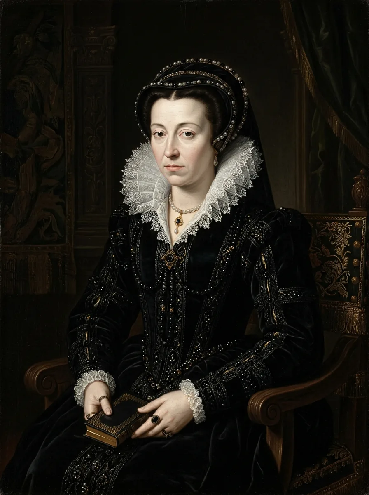

کاترین دو مدیچی
Caterina Maria Romula di Lorenzo de' Medici
ملکه مادر و نایبالسلطنه فرانسه؛ زنی از تبار بانکداران فلورانس که در میان آتش جنگهای سیساله مذهبی فرانسه تلاش کرد سلطنت متلاشیشده والوا را حفظ کند.
«من هر آنچه در توان بشر بود برای جلوگیری از برادرکشی در این سرزمین به کار بستم.»
نامههای مستند او در آرشیو ملی فرانسه بازتابی از درماندگی او در مهار کینهتوزی متعصبان کاتولیک و پروتستان است.
۰۱
آنچه کرد (کارنامه تاریخی مستند)
۱۵۶۰ م.
قبول نیابت سلطنت فرانسه پس از فوت ناگهانی شوهر و پسر ارشدش در اوج آشوب مذهبی.
۱۵۷۲ م.
کشتار سن بارتلمی؛ ترور خونین پروتستانهای هوگنو در پاریس و تخریب ابدی میراث سیاسی او.
۰۲
آنچه نامیده شد (تحلیل و نقد برچسبها)
ملکه سیاه و مسمومکننده ایتالیایی
✎ قرائت جایگزین و نقد تاریخنگاری
کاترین زنی بیگانه در دربار فرانسه بود که به جای مسمومکننده، عمری را صرف مذاکرات صلح نافرجام و عقد عهدنامههای آزادی مشروط دینی کرد.
۰۳
خوانش شخصیت (غیرتشخیصی)
توجه علمی: این یک تشخیص نیست. بدون مصاحبه بالینی معتبر، تشخیص گذشتهنگر از نظر معرفتشناسی روانپزشکی ناممکن است. آنچه میخوانید تفسیری غیرتشخیصی از رفتارهای مستند بر اساس تاریخ مستند و روانشناسی مدرن است.
کاترین دو مدیچی با میراثی سیاه در تاریخ عجین شده، اما اسناد آرشیوی نشان میدهند او حاکمی عملگرا و فرزند مکتب دیپلماسی فلورانس بود که میان زیادهخواهیهای خاندان افراطی گیز و هوگنوها گرفتار شد. سیاست او حفظ تاج برای فرزندانش بود، حتی اگر تاریخ تمام گناهان آن دوران تباه را به پای او بنویسد.
۰۴
اسناد و منابع پژوهشی
- [منبع پژوهشی] Knecht, R. J. Catherine de' Medici. Longman, 1998.
- [منبع پژوهشی] Sutherland, N. M. The Huguenot Struggle for Recognition. University of North Carolina Press, 1980.